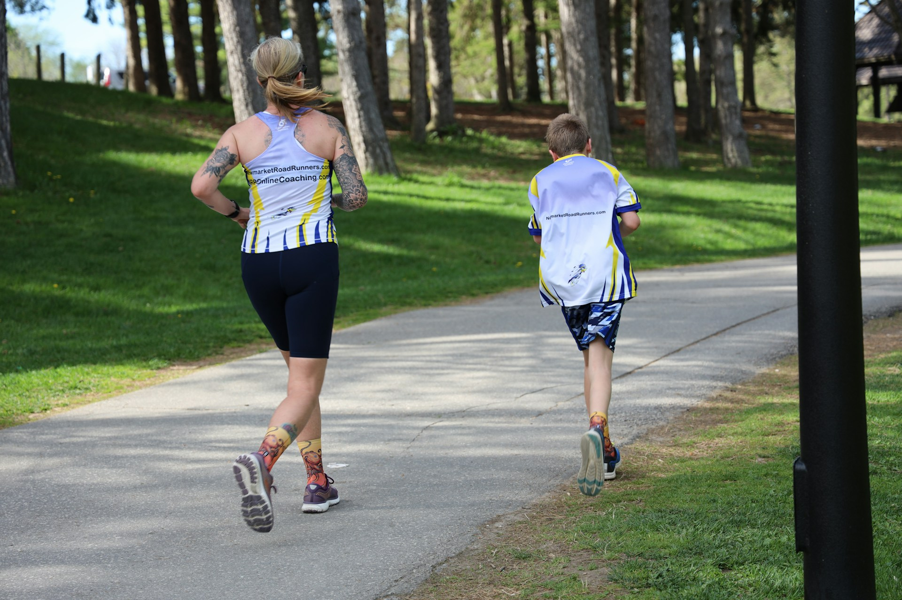

Alimentação Saudável
Manter uma alimentação equilibrada é fundamental para garantir o bom funcionamento do nosso corpo e mente. Uma dieta rica em nutrientes ajuda a prevenir doenças, melhora a disposição e contribui para o bem-estar geral. Aqui estão algumas dicas para adotar uma alimentação saudável:
- Variedade é a chave: Inclua uma ampla gama de alimentos no seu prato. Frutas, vegetais, grãos integrais, proteínas magras e gorduras saudáveis devem fazer parte da sua dieta diária. Cada grupo alimentar oferece diferentes nutrientes essenciais.
- Evite alimentos processados: Alimentos ultraprocessados, ricos em açúcares, gorduras saturadas e sódio, podem causar diversos problemas de saúde. Prefira alimentos frescos e naturais sempre que possível.
- Hidrate-se: A água é essencial para o funcionamento adequado do organismo. Beber pelo menos oito copos de água por dia ajuda a manter a pele saudável, melhora a digestão e auxilia na desintoxicação do corpo.
- Controle as porções: Comer em excesso, mesmo de alimentos saudáveis, pode levar ao ganho de peso indesejado. Preste atenção às porções e evite comer até sentir-se muito cheio.
- Escute seu corpo: Aprenda a reconhecer os sinais de fome e saciedade do seu corpo. Comer apenas quando estiver com fome e parar quando estiver satisfeito ajuda a manter um peso saudável e evita o excesso de calorias.
Benefícios da Caminhada
A caminhada é uma atividade física acessível e eficaz que traz inúmeros benefícios à saúde. Pode ser praticada por pessoas de todas as idades e níveis de condicionamento físico. Aqui estão alguns dos principais benefícios de incluir caminhadas na sua rotina diária:
- Melhora a saúde cardiovascular: Caminhar regularmente ajuda a fortalecer o coração, reduzindo o risco de doenças cardíacas. Isso ocorre porque a caminhada melhora a circulação sanguínea e ajuda a manter os níveis de pressão arterial sob controle.
- Auxilia na perda de peso: A caminhada é uma forma eficaz de queimar calorias e, quando combinada com uma alimentação saudável, pode ajudar na perda de peso e na manutenção de um peso corporal adequado.
- Aumenta a energia e reduz o estresse: Caminhar ao ar livre, especialmente em ambientes naturais, pode aumentar os níveis de energia, melhorar o humor e reduzir o estresse e a ansiedade.
- Fortalece os músculos e articulações: Caminhar regularmente ajuda a fortalecer os músculos das pernas e a manter as articulações saudáveis, prevenindo dores e problemas articulares.
- Melhora a qualidade do sono: Pessoas que praticam atividades físicas, como a caminhada, tendem a ter uma melhor qualidade de sono, adormecendo mais facilmente e desfrutando de um sono mais profundo.
Dicas para Começar
- Defina metas realistas: Comece com pequenas metas, como caminhar por 20 minutos por dia, e aumente gradualmente o tempo e a intensidade das caminhadas.
- Escolha um bom calçado: Use sapatos confortáveis e adequados para caminhada para evitar lesões e garantir o conforto durante a atividade.

- Incorpore a caminhada à sua rotina: Encontre maneiras de incluir a caminhada no seu dia a dia, como ir a pé ao trabalho, passear com o cachorro ou fazer caminhadas em parques nos fins de semana.
- Convide um amigo: Caminhar com um amigo ou um familiar pode tornar a atividade mais agradável e motivadora.
Adotar uma alimentação saudável e praticar caminhadas regularmente são passos importantes para uma vida mais saudável e equilibrada. Pequenas mudanças no seu estilo de vida podem trazer grandes benefícios para a sua saúde e bem-estar. Comece hoje mesmo e sinta a diferença!